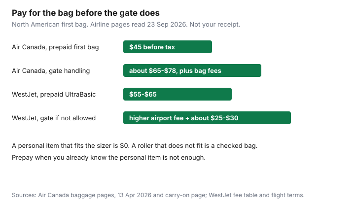

Travel · Canada
How to Avoid Checked-Bag Fees on Air Canada and WestJet Without Getting Gate-Checked
A household buys the fare that looks $80 cheaper, then meets a metal frame at the gate. The roller does not fit the personal-item box. The agent checks it, the fee is no longer the prepaid price, and the “deal” is gone before anyone sits down. Air Canada and WestJet publish the box. CATSA publishes the liquids bag. The work is measuring your bag against those pages, then deciding whether one prepaid checked bag is still the cheap choice.
Figures below were read from airline, CATSA, and Aeroplan pages on 23 Sep 2026. They move. The receipt on your booking is the allowance that will be charged. This page is the packing system. The fare-brand decision sits in the Basic versus Standard guide. The buy-window sits in when to book from Canada.
Disclosure: Packing cubes and luggage are an offer type. Saving Optimizer may earn a commission if we later add retailer links. We do not currently claim a luggage, airline, or card partnership. No card is ranked here. Education only.
Key takeaways
- Air Canada’s standard carry-on is 23 × 40 × 55 cm (depth × width × height). The personal item is 33 × 43 × 16 cm. Both include wheels and handles. WestJet publishes a carry-on of 56 × 23 × 36 cm and a personal item of 41 × 15 × 33 cm.
- Economy Basic tickets bought on or after 3 January 2025 are a personal item on trips within Canada, to or from the U.S. (including Hawaii and Puerto Rico), and to or from Mexico, Central America, and the Caribbean. WestJet UltraBasic within Canada and the U.S. is the same idea, with a carry-on exception to and from Europe and Asia, or when Extended Comfort is bought for every flight in that direction.
- Air Canada’s gate page describes a pre-authorization of about CA/US $65–$78 tax inclusive if a Basic bag reaches the gate, and checked-bag fees can still apply. WestJet adds a checked-bag fee plus a service fee of about $25–$30.
- Prepaid is the cheap checked bag. On tickets bought on or after 13 April 2026, Air Canada’s first bag on Basic and Standard within Canada, to or from the U.S., or to or from Mexico, the Caribbean, or Central America is CA/US $45 before tax. WestJet’s prepaid UltraBasic first bag within Canada or the U.S. is published as $55–$65.
- CATSA: containers of 100 ml / 100 g or less, one clear bag of at most 1 litre, one bag per person. A full bottle belongs in a checked bag or in a shop at the destination.
- Status and cobrand first-bag benefits are real, and they are easy to miss. Aeroplan card terms exclude bags checked at the gate. Check the benefit before you pack. Do not buy a card from this page.
Know personal item vs carry-on size limits for AC and WestJet
Two bags have two jobs. The personal item goes under the seat. The standard carry-on goes in the bin, and only if the fare includes it. A coat, a small purse, and an infant care item (including a small collapsible stroller) sit beside those two on Air Canada’s carry-on page. They are not a second roller.
Air Canada’s carry-on page, read 23 Sep 2026, states the maximums including wheels and handles. There is no published weight limit on the carry-on itself. You have to be able to lift it into the bin without help. If it does not fit, it is checked, and checked-bag charges can apply. Economy Basic purchased on or after 3 January 2025 allows one personal item, not the standard article, when the trip is within Canada, to or from the United States, or to or from Mexico, Central America, and the Caribbean. If the Basic itinerary continues to an international destination that includes a standard carry-on, that carry-on applies to the whole trip, including the Canadian connection. Read the receipt. Do not assume the connection saved the roller.
WestJet’s carry-on page allows one carry-on and one personal item on Econo, Member Exclusive, EconoFlex, Premium, PremiumFlex, Business, and BusinessFlex. UltraBasic is one personal item. The two published exceptions are travel to and from Europe and Asia, and a booking where Extended Comfort has been purchased for every flight in that direction, including connections. A bag that fails the sizer is treated as checked baggage. An UltraBasic bag that is not allowed is checked and draws a checked-bag fee and a service fee.
| Bag | Air Canada | WestJet |
|---|---|---|
| Personal item | 33 × 43 × 16 cm | 41 × 15 × 33 cm |
| Standard carry-on | 23 × 40 × 55 cm | 56 × 23 × 36 cm |
| Who gets the carry-on | Not Basic on the North American and sun routes above, for tickets from 3 Jan 2025 | Not UltraBasic within Canada and the U.S., unless Europe/Asia or Extended Comfort on every flight that way |
Do the test at home. A soft bag that passes a tape measure can still fail a rigid sizer if the corners are stuffed. If the fare is personal-item only, the bag has to live under the seat for the whole flight, including a three-hour domestic hop where you wanted a laptop out. If it will not, you are buying a checked bag. Buy it before the gate.
Outfit math and packing cubes that keep you under weight
Checked economy bags on Air Canada are capped at 23 kg (50 lb) on the products page. Overweight and oversize are separate fees. The way households blow the limit is shoes, liquids, and “just in case” layers, not the shirts.
Count outfits as wears, not as garments. Four days, one pair of trousers, one sweater that stays on the plane, two shirts, underwear, and the shoes on your feet is a personal-item trip for a lot of adults. A second pair of shoes is often the kilogram that forces the checked bag. Wear the heavy pair. Put the lighter pair in the bag only if a day on the itinerary truly needs it.
- One packing cube for clothes you will rewear. One smaller cube for underwear and socks. A cube is a compression tool and a way to see that you packed twice. It is not a larger allowance.
- Weigh the packed bag on a household scale before you leave. A bag at 9 kg under the seat is a bag you can still lift. A bag at 12 kg that “should fit” is the one the agent pulls.
- Leave the gift shopping for the return, in a fold-flat bag you can check on the way home if the fare allows a prepaid bag only one way. Do not fly out with the empty suitcase “for later.”
- Outerwear on your body does not count as the personal item. A packed parka does.
Cubes and a soft-sided personal item are the gear that makes the limit usable. Buy them if you do not own them. Do not buy a new roller because a product photo said “airline approved.” The sizer is the approval.
Liquids strategy: 100 ml CATSA bag vs buying toiletries at destination
CATSA’s liquids rule, still the screening rule for departures in Canada, is simple and strictly sized. Every container of liquid, aerosol, gel, or non-solid food in carry-on must be 100 ml or 100 g or less. All of those containers go in one clear, resealable bag of at most 1 litre. One bag per passenger. The bag comes out of the personal item at security. A 150 ml toothpaste, a jam jar, or a peanut-butter snack cup that does not fit the bag is not a negotiation.
The money choice is which liquids travel and which you buy after you land.
- Carry the 100 ml set when the trip is short, the product is hard to replace (a prescription cream, a specific sunscreen you will not find), or you are on a personal-item fare and will not check anything. Decant into containers that are actually 100 ml, not “about 100 ml.”
- Buy at the destination when the item is ordinary shampoo, toothpaste, or detergent and a drugstore is on the first day. A $6 bottle in Calgary is cheaper than a gate-checked bag in Toronto.
- Check the full sizes only when you are already paying for a checked bag for another reason. Do not check a bag solely to bring a 400 ml shampoo.
Exceptions CATSA publishes matter for families: prescription medicine, and baby food or liquids in reasonable quantities for the trip, are not forced into the 100 ml hobby size. Declare them. Do not hide a family’s toiletries inside the baby-food exception. Infant formula and the diaper bag are a separate allowance on the airline side too. Air Canada allows one additional standard article for a lap infant’s belongings, such as a diaper bag. That diaper bag is not a parent’s second carry-on.
When prepaying one bag still beats gate surprise fees
Avoiding the fee is the right goal when the personal item is honestly enough. Prepaying one bag is the right goal when it is not. The expensive outcome is discovering that at the gate.
Air Canada, tickets purchased on or after 13 April 2026, for travel within Canada, to or from the U.S., or to or from Mexico, the Caribbean, or Central America: Economy Basic and Standard, first checked bag CA/US $45, second $60, taxes extra. Flex includes the first bag; the second is $60. For Basic fares purchased on or after 14 May 2026 to Africa, Asia and the South Pacific, Europe, the Middle East, or South America, the first bag is $90 and the second $120. On those long-haul routes Standard and Flex include the first bag. The products page also shows tax-inclusive bands (for example $45–$54 on a domestic first bag). Use the pre-tax figure as the planning number and expect tax on a Canadian departure.
If a Basic traveller reaches the gate with a bag the fare does not allow, Air Canada’s carry-on page describes a credit-card pre-authorization for gate handling of CA/US $65–$78 tax inclusive, and it says checked-bag fees still apply because Basic does not include a carry-on. That stack is the surprise. Paying $45 before security is the planned version of the same bag.
WestJet’s public fee table, within Canada and the U.S., publishes UltraBasic prepaid bags as $55–$65 for the first and $70–$83 for the second. The range is the tax difference by departure airport. Econo or Member Exclusive prepaid first bag is published lower, about $45–$53. EconoFlex includes the first. WestJet’s flight terms also spell a step-up on UltraBasic: about $55 prepaid at booking for the first piece, about $70 if added at online check-in, about $80 with an airport agent, before that tax range. An unauthorized carry-on at the gate adds the service fee of $25–$30 on top of the checked-bag fee. Prepay in Manage Trips up to 24 hours before departure if you already know you need the bag.

| Choice | Air Canada Basic or Standard | WestJet UltraBasic |
|---|---|---|
| Personal item only | $0 bag, if it fits 33 × 43 × 16 cm | $0 bag, if it fits 41 × 15 × 33 cm |
| Prepay one checked bag | $45 before tax (tickets from 13 Apr 2026) | $55–$65 prepaid |
| Wait until the airport or the gate | Gate handling about $65–$78 tax inclusive, and checked fees can still apply | Higher airport price, plus about $25–$30 if the carry-on was not allowed |
Prepay when any of these is true: the trip is longer than the personal item can honestly cover, you are bringing a device plus a week of clothes, a child has gear that is not the free stroller or car seat, or two people would otherwise each gamble at the gate. Do not prepay a second bag “to be safe” if the first bag is under 23 kg and the rest fits under the seat. Second-bag prices are the next cliff.
Status, cobrand, and fare-class bag benefits—check before you pack
Three different benefits get talked about as if they were one. They are not, and they mostly do not stack into a pile of free bags.
Fare class. On the North American and sun routes above, Air Canada Flex includes the first checked bag. Basic and Standard do not. Comfort and Latitude include more; confirm the cabin you actually bought. On long-haul tickets from 14 May 2026, Standard and Flex include the first bag and Basic does not. WestJet EconoFlex, Premium, and business-brand fares include the first bag. UltraBasic and Econo generally do not. The fare on the receipt beats a blog’s memory of “economy includes a bag.”
Aeroplan status. Air Canada’s September 2025 elite update, effective February 2026: an Aeroplan 25K member may check one bag on top of the fare, up to a maximum of two complimentary checked bags, when flying Air Canada in economy. The same update says that benefit can be combined with the free-first-bag benefit on an eligible Aeroplan Premium or Core card, so a 25K member on a fare with no included bag can check up to two bags. Higher tiers publish their own allowances. Read your tier. A status bag is not a reason to pack two rollers “because we have status” if only one person in the booking holds it.
Cobrand cards. Air Canada’s card-benefit pages describe a first checked bag free, up to 23 kg, for the primary cardholder and up to eight companions on the same reservation, when travel originates on an Air Canada, Rouge, or Express flight and the bag is checked at the counter before security. Bags checked at the gate are not eligible. If the first bag is already free because of the fare, the card does not invent an extra bag — except where the 25K rule above expressly combines. WestJet’s fee page says Rewards-tier benefits apply instead of the fare’s bag fees, the WestJet RBC World Elite Mastercard includes a first checked bag when that card pays for the flight, and bag benefits do not combine: you receive the highest single benefit. This page will not tell you which card to open. If you already hold one, log in and read whether this booking qualifies before you pay $45 four times.
The practical check, the night before: whose name is on the reservation, whose number is attached, whether the card that carries the benefit paid for the ticket if the terms require that, and whether you will check the bag before security. A benefit you cannot trigger at the gate is not a benefit on a Basic fare you tried to sneak a roller through.
Family tactic: distribute weight legally across passengers
Bag fees are per person, per direction. A family of four on Basic, each “needing” a roller, is four prepaid bags. The legal save is to use every personal item that already exists, and to put the one checked suitcase on the passenger who actually has an allowance.
- Each person packs their own under-seat bag to the personal-item size, including older kids. A child’s fare does not create a parent’s second carry-on. It does create that child’s own personal item.
- Put shared bulk (the extra sweaters, the drugstore refill) into one checked bag tagged to the adult whose Flex fare, 25K benefit, or eligible card covers the first bag. Do not retag that bag to a child at the counter to “use their allowance” if the child has no allowance. The tag follows the ticket.
- Strollers and car seats that the airline accepts as infant or child equipment are not the same fee as a suitcase. Air Canada’s lap-infant rule allows a diaper bag as an additional article. WestJet’s family page allows infant and child equipment on its own terms, including a diaper bag for a lap infant. Read that list. A wagon full of toys is not on it.
- Do not stuff one personal item until the zipper fails the sizer, then hope the agent is kind. That is the gate fee. Move two shirts to another person’s cube instead.
- Weight does not pool. A 28 kg bag is overweight even if the family’s average is 14 kg. Split into two bags only if two allowances exist. Otherwise leave the weight at home.
Run the headcount in dollars before you pack. Two adults and two children on Air Canada Basic, tickets from 13 April 2026, one checked bag each way for the whole family: about $45 × 2 directions = $90 before tax, if one suitcase truly covers everyone and four personal items cover the rest. Four checked bags each way is about $360 before tax. The difference is outfit math, not a promo code. Seat-together rules for children under 14 are a separate right under the Air Passenger Protection Regulations. They are not a free checked bag. The family budget that multiplies fares and rooms is the per-day family guide.
Sources & date stamps
- Air Canada, carry-on baggage — personal item 33 × 43 × 16 cm and standard article 23 × 40 × 55 cm; Basic personal-item rule for tickets from 3 Jan 2025; gate-handling pre-authorization about CA/US $65–$78 tax inclusive. Used 23 Sep 2026.
- Air Canada, baggage fee changes (13 Apr 2026 and 14 May 2026) and products-and-services page — first and second checked-bag amounts cited above; economy checked bag 23 kg. Used 23 Sep 2026.
- WestJet, carry-on page, baggage fee table, and flight terms — UltraBasic personal item, size string, prepaid ranges, airport step-up, and the $25–$30 service fee. Used 23 Sep 2026.
- CATSA, liquids and personal items — 100 ml / 100 g containers, one bag of at most 1 litre, one bag per passenger. Used 23 Sep 2026.
- Air Canada, September 2025 elite update (effective February 2026) and Aeroplan credit-card benefit pages (TD and American Express pages on aircanada.com) — 25K extra bag and first-bag card terms, including the before-security limit. Used 23 Sep 2026. Not a recommendation to apply.
- WestJet service-fees page — tier benefits replace fare bag fees; cobrand first bag when that card pays; benefits do not combine. Used 23 Sep 2026.
Frequently asked questions
What size is a personal item on Air Canada and WestJet?
Air Canada publishes a personal item at 33 x 43 x 16 cm (depth x width x height), wheels and handles included, and a standard carry-on at 23 x 40 x 55 cm. WestJet publishes a personal item at 41 x 15 x 33 cm and a carry-on at 56 x 23 x 36 cm. Measure the bag you own. A bag that fails the sizer is a checked bag.
What happens if I bring a roller to the gate on Basic or UltraBasic?
On many North American routes those fares allow one personal item, not a carry-on. Air Canada’s page describes a gate-handling pre-authorization of about CA/US $65–$78 tax inclusive, and checked-bag fees can still apply. WestJet’s flight terms add a checked-bag fee plus a service fee of about $25–$30. Prepaying the bag, or leaving the roller at home, is the cheaper path.
Does a credit card or Aeroplan status waive the bag?
Sometimes, and only on the terms printed for that benefit. Eligible Aeroplan cards publish a first checked bag free (up to 23 kg) for the cardholder and up to eight companions on the same reservation when the trip starts on Air Canada and the bag is checked before security. Gate-checked bags are excluded. Aeroplan 25K, from February 2026, is one bag on top of the fare, up to two, and Air Canada says that benefit can combine with an eligible card. WestJet says tier benefits and the cobrand bag benefit do not stack: you get the highest single benefit. Read the receipt. This is not a card ranking.
Can our family share one checked-bag allowance?
Each ticket has its own allowance. You can move clothes into the personal item of a person whose fare allows only that item, and you can check a shared suitcase on the passenger whose fare, status, or card actually includes a bag. You cannot move an overweight bag onto someone else’s tag to dodge a fee. Children under 14 still need their own ticket’s rules.
Is the 100 ml liquids rule still in force in Canada?
Yes. CATSA requires containers of 100 ml or 100 g or less, all inside one clear resealable bag of no more than 1 litre, one bag per passenger. A full-size shampoo bottle in the personal item is how a carry-on trip becomes a checked bag at security.